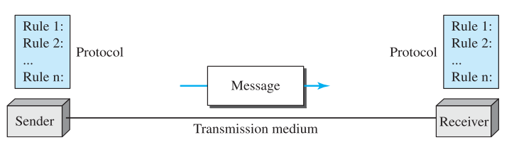
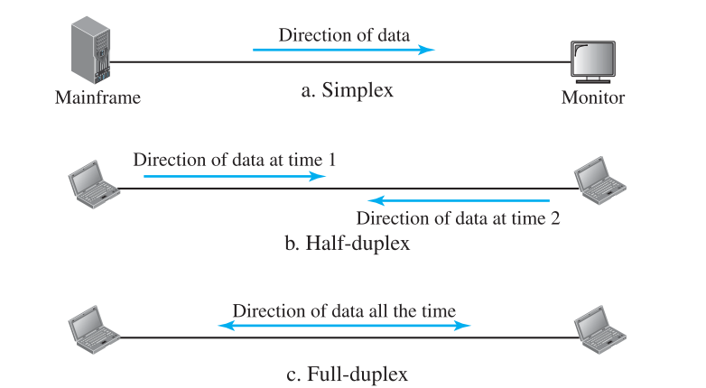
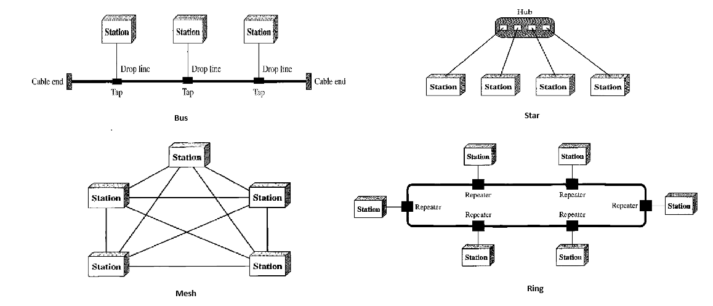

Computer Network
Data Communication
Def: Exchange of data between two devices via some form of transmission medium such as a wire cable.
Effectiveness of Data communication system depends on
- Delivery: Data must be received by intended device or user and only that device or user
- Accuracy: system must deliver data accurately
- Timeliness: Late delivery of data is useless.
- Jitter: Variation in packet arrival time.
Components

- Message: data to be communicated. eg text, images etc
- Sender: device that sends data. Eg computer, telephone
- Receiver: device that receives data
- Transmission Medium: physical path by which a message travels. Eg twisted pair wire, coaxial cable, fibre optic
- Protocol: set of rules that govern data communications. Represent agreement between communicating devices.
Data Representation
- Text: ASCII, Unicode systems are used to encode text data.
- numbers: numbers can be directly converted into binary
- Images: Image is composed of matrix of pixels. Most popular method for colored image is RGB
- Audio: It is continuous. We can send it as it is or can discretized it.
- Video: number of pictures.
Data Flow

- Simplex: Eg. Keyboard & traditional monitors
- Half Duplex: Eg. Walkie talkies
- Full duplex: Eg. telephone
Networks
def: It is set of devices connected by communication links.
Network Criteria
- Performance: can be measured in transit time (time required for message to travel from one device to another) & response time (time between inquiry & response). performace depends on number of users, type of transmission medium,capabilities of connected devices & efficiency of software. performace is evaluated by Throughput & delay
- Reliability: It is frequency of failure, the time it takes a link to recover from failure & networks robustness in catastophe
- Security: Includes protecting data from unauthorized access, protecting data from damage & development and implementing policies, procedures for recovery from breaches and data losses.
Physical Structures
Type of Connection
- Point-to-Point: dedicated link between two devices. Entire capacity reserved.
- Multipoint: more than two specific devices share a single link. capacity is shared, either spatially or temporally.
Physical topology
How physical network is laid out.
Mesh
every device has a dedicated point-to-point link to every other device. physical links in a fully connected mesh with nodes, will be . To accomodate that many links, every device on network must have IO ports.
| Advantages | Disadvantages |
|---|---|
| dedicated links no traffic problem. | cabling and IO ports requirement is high. |
| robust. if one link goes down does not impact entire system | |
| privacy/security as dedicated links | |
| fault identification and isolation easy |
Mesh topology is usually implemented in limited fashion. eg backbone connecting main computers.
Star
each device has dedicated point-to-point link only to a central controller (hub).
| Advantages | Disadvantages |
|---|---|
| less expenssive than mesh topology | hub goes down, whole system goes down. |
| robustness if hub is not down. | more cabling than ring/bus |
| fault identification and isolation easy |
used in LANs
Bus
multipoint. single cable acts as backbone. nodes are connected to bus cable by drop lines and taps.
| Advantages | Disadvantages |
|---|---|
| ease of installation | signal get weaker as distance increase in nodes |
| cheap as only backbone cable required. | difficult reconnection & fault isolation |
| fault identification and isolation easy | fault in bus stops all transimission |
Ring
each device has a dedicated P2P connection with only two devices on either side of it.
| Advantages | Disadvantages |
|---|---|
| easy to install & reconfigure | break in ring can disable entire network |
